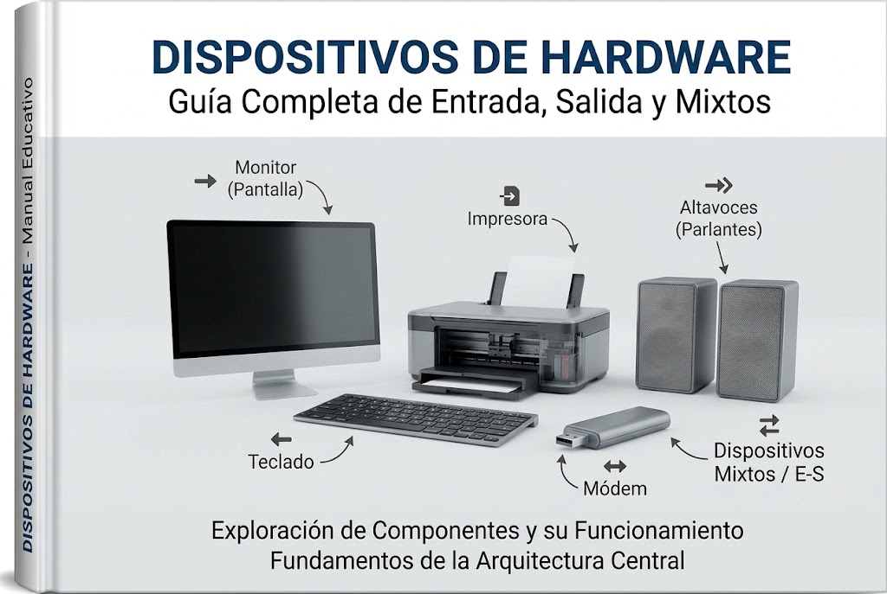
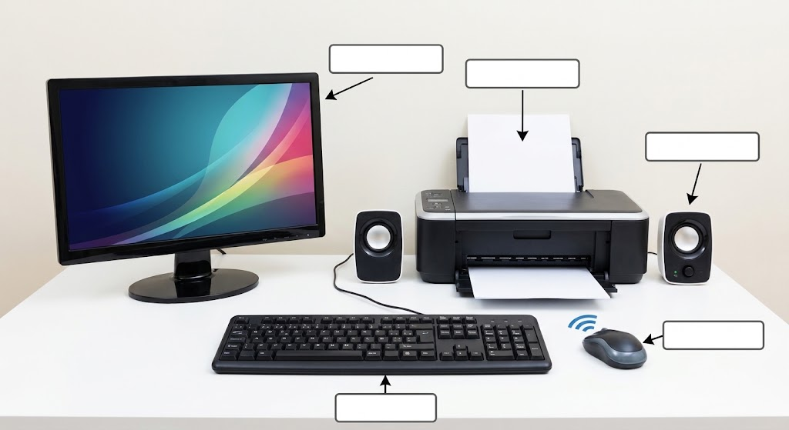

Dispositivos de Hardware

Grippa Lorena
Dispositivos de Entrada
Son los componentes encargados de capturar órdenes y datos desde el exterior, transformándolos en señales binarias (impulsos eléctricos) para que la CPU pueda procesarlos. Son los componentes encargados de capturar órdenes y datos desde el exterior, transformándolos en señales binarias (impulsos eléctricos) para que la CPU pueda procesarlos.
- El Teclado: Es el periférico de entrada principal. Su distribución estándar es QWERTY (101 teclas divididas en bloques alfanuméricos, numéricos, de función F1-F12, control y navegación). Un chip controlador detecta cada pulsación y la envía a la CPU.
- Dispositivos Apuntadores: Permiten mover el cursor e interactuar con elementos gráficos en pantalla:
- Ratón (Mouse): Puede ser optomecánico (usa esfera y rodillos) u óptico (usa sensores de luz sin partes móviles).
- Otros: Trackball (esfera fija manipulada con los dedos), joysticks, lápices ópticos y pantallas táctiles (touchscreen).
- Herramientas de Lectura: Transforman información impresa en datos procesables mediante haces de luz:
- Lectores de código de barras (identifican productos en comercios). -
- Lectores de marcas ópticas (detectan marcas de lápiz en formularios o exámenes).
- Tecnología OCR (reconocimiento óptico de caracteres impresos).
- Digitalización del Mundo Real: Convierten señales analógicas del entorno en formato digital:
- Escáneres y Cámaras digitales: Digitalizan fotografías e imágenes.
- Audio, Sensores y Realidad Virtual: Micrófonos (ondas sonoras), sensores físicos (temperatura/humedad) y cascos/guantes de RV (movimientos corporales).
Dispositivos de Salida
Convierten los patrones de bits internos de la computadora en información comprensible para los sentidos humanos. Se clasifican en tres grandes grupos:
- Salida Visual (Monitores): Muestran datos e interfaces mediante una malla de puntos luminosos llamados píxeles (gestionados por la placa de video):
CRT (Tubo de Rayos Catódicos): Tecnología antigua basada en cañones de electrones y colores RGB.
LCD (Cristal Líquido): Pantallas delgadas y ligeras que requieren iluminación trasera. Sus parámetros clave son la resolución, el tamaño en pulgadas y la frecuencia de refresco (Hz).
- Salida Impresa (Impresoras): Generan copias físicas permanentes en papel:
Matriz de puntos: Agujas que golpean una cinta entintada; económicas y útiles para facturas múltiples, pero ruidosas.
Inyección de tinta: Expulsan microgotas de tinta líquida; ofrecen equilibrio entre calidad y costo.
Láser: Fijan tóner en polvo mediante calor y presión; son rápidas, silenciosas y de máxima definición.
- Salida Sonora (Audio): Generan voz, música y efectos mediante la tarjeta de sonido, que convierte muestras digitales en ondas audibles. Sus formatos más conocidos son .WAV (alta fidelidad sin compresión), MIDI (notas musicales) y MP3 (comprimido).
Dispositivos de Entrada / Salida (Mixtos)
Son interfaces bidireccionales capaces de enviar y recibir información simultáneamente
Consigna para el estudiante:
Observa atentamente la estación de trabajo ilustrada. Aunque todos los componentes se encuentran sobre el mismo escritorio trabajando en conjunto, cada uno cumple un rol específico en la comunicación con el núcleo del computador:
1- Clasificación funcional: Agrupa los cinco dispositivos señalados en la imagen (Monitor, Impresora, Parlantes, Teclado y Mouse) en dos columnas: Dispositivos de Entrada y Dispositivos de Salida.
2 - Desafío: "Si tuvieras que reemplazar el Monitor tradicional de esta imagen por una pantalla táctil (touchscreen), ¿en qué categoría de periféricos pasaría a ubicarse y por qué?"
